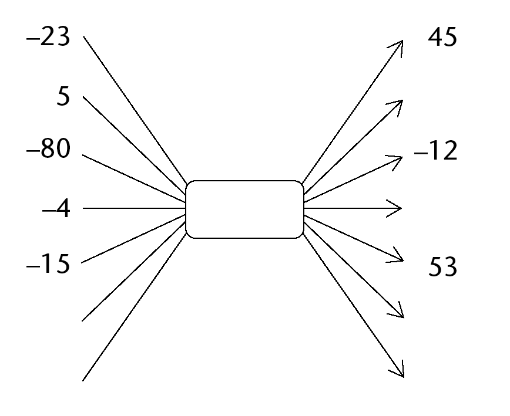
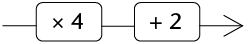
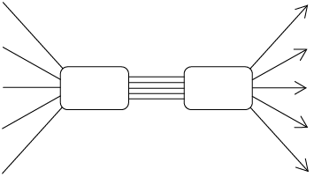
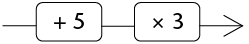

Funksies en verbande
In hierdie hoofstuk gaan jy leer van hoeveelhede wat verander, byvoorbeeld die hoogte van ’n boom. Soos wat die boom groei, verander sy hoogte. ’n Hoeveelheid wat verander word ’n veranderlike hoeveelheid genoem, of bloot ’n veranderlike. Dit is dikwels so dat wanneer een hoeveelheid verander, daar ook ’n ander hoeveelheid is wat verander. Byvoorbeeld, soos wat die getal oproepe wat op ’n foon gemaak word meer raak, raak die getal rande wat dit kos ook meer. Ons sê daar is ’n verband of verwantskap tussen hoeveel geld jy moet betaal en hoeveel oproepe jy maak.
Jy gaan leer hoe om die verband tussen twee hoeveelhede op verskillende maniere te beskryf.
Konstante en veranderlike hoeveelhede
Kyk uit vir ’n verband tussen hoeveelhede
Kyk na die volgende sewe situasies. Daar is twee hoeveelhede in elke situasie. Sê of elke hoeveelheid konstant (altyd dieselfde getal) is en of dit verander. Sê ook elke keer of die een hoeveelheid die ander een sal beïnvloed en, indien wel, verduidelik hoe.
- Jou ouderdom en die getal vingers aan jou hande
- Die getal oproepe wat jy maak en die lugtyd wat op jou selfoon oor is
- Die lengte van jou arm en jou vermoë om wiskundetoetse vinnig klaar te maak
- Die getal identiese huise wat gebou moet word en die getal bakstene wat benodig word
- Die getal leerders by ’n skool en die duur van die skooldag
- Die getal leerders by ’n skool en die getal klaskamers wat benodig word
- Die getal vuurhoutjies in elke rangskikking hier onder en die getal driehoeke in die
rangskikking

’n Hoeveelheid wat verander word ’n veranderlike hoeveelheid of bloot ’n veranderlike genoem.
Indien een veranderlike deur ’n ander veranderlike beïnvloed word, sê ons daar is ’n verwantskap of verband tussen die twee veranderlikes. Dit is soms moontlik om te bepaal watter waarde van een hoeveelheid, met ander woorde watter getal, aan ’n spesifieke waarde van die ander hoeveelheid gekoppel is.
-
- Kyk na die vuurhoutjierangskikkings in vraag 7. As jy weet dat ’n rangskikking
3 driehoeke omvat, kan jy met sekerheid sê hoeveel vuurhoutjies dit bevat?
- Hoeveel vuurhoutjies is daar in ’n rangskikking met 10 driehoeke?
- Is daar ’n ander moontlike antwoord op vraag (b)?
- Kyk na die vuurhoutjierangskikkings in vraag 7. As jy weet dat ’n rangskikking
3 driehoeke omvat, kan jy met sekerheid sê hoeveel vuurhoutjies dit bevat?
- Voltooi die onderstaande vloeidiagram deur al die ontbrekende getalle in te vul.
Sien jy ’n verband tussen die situasie in vraag 7 en hierdie vloeidiagram? Indien wel,
beskryf dit.
Voltooi ’n paar vloeidiagramme
’n Verband tussen twee hoeveelhede kan met ’n vloeidiagram aangedui word, soos dié hier onder. Ongelukkig kan net sommige van die getalle op ’n vloeidiagram aangedui word.
- Bereken die ontbrekende invoer- en uitvoergetalle. Kies jou eie stelle verwante getalle
waar die invoer- sowel as die uitvoergetal ontbreek.
Elke invoergetalin ’n vloeidiagram het ’n ooreen- stemmende uitvoergetal Die eerste (boonste) invoer- getal stem ooreen met die eerste uitvoergetal en so aan.
+5 word die operator genoem.
-
- Watter soort getalle is die gegewe invoergetalle?
- In die vloeidiagram hier bo stem die uitvoergetal 8 ooreen met die invoergetal 3.
Voltooi die volgende sinne:
In die verwantskap wat die vloeidiagram hier bo toon, stem die uitvoergetal ooreen met die invoergetal -1.
Die invoergetal ______ stem ooreen met die uitvoergetal 7.
Indien dit as invoergetal gewys was, sou mens kon sien dat ______ met die uitvoergetal 31 ooreenstem..
-
-
- Voltooi hierdie vloeidiagram.

- Vergelyk hierdie vloeidiagram met die vloeidiagram in vraag 1. Watter verband is
daar tussen die twee?
- Voltooi hierdie vloeidiagram.
- Voltooi die vloeidiagramme. Jy moet die operator
by (b) self bepaal en dit invul.
-
-

- Watter getal kan jy in (a) bytel, in plaas daarvan om 5
af te trek om dieselfde uitvoergetalle te lewer?
- Watter getal kan jy in (b) aftrek, in plaas daarvan om
’n getal by te tel om dieselfde uitvoergetalle te lewer?
-
- Voltooi die vloeidiagram:

’n Voltooide vloeidiagram bevat twee tipes inligting:
- Dit wys watter bewerkings gedoen word om die uitvoergetalle te lewer.
- Dit wys watter uitvoergetal aan watter invoergetal gekoppel is
Die vloeidiagram wat jy in vraag 4 voltooi het bevat die volgende inligting:
- Elke invoergetal word vermenigvuldig met 6, dan word 40 bygetel om die ooreenstemmende uitvoergetal te gee.
- Die invoer- en uitvoergetalle is soos volg aan mekaar gekoppel:
|
Invoergetalle |
-1 |
-2 |
-3 |
-4 |
-5 |
|
Uitvoergetalle |
34 |
28 |
22 |
16 |
10 |
-
- Sê in woorde hoe die uitvoergetalle hier onder bereken word.

- Gebruik die tabel hier onder om te wys watter uitvoergetalle aan watter
invoergetalle gekoppel word in bostaande vloeidiagram.
- Sê in woorde hoe die uitvoergetalle hier onder bereken word.
- Die volgende tabel bevat die inligting wat beskikbaar is oor die vloerruimte en koste
van huise in ’n nuwe ontwikkeling. Die koste van ’n leë erf is R180 000.
Vloerruimte in vierkante meter
90
120
150
180
210
Koste van huis en erf
540 000
660 000
780 000
900 000
1 020 000
- Gebruik die onderstaande vloeidiagram om die inligting weer te gee.

- Wys wat die huise alleen sou kos indien die erf gratis was.

- Probeer uitwerk wat die koste van ’n huis (met erf) sal wees indien dit presies 100 m2 vloerruimte het.
- Gebruik die onderstaande vloeidiagram om die inligting weer te gee.
Verskillende maniere om verbande te beskryf
’n verband tussen rooi en blou kolletjies
Hier is ’n voorbeeld van ’n verband tussen twee hoeveelhede:

In elke rangskikking is daar rooi sowel as blou kolletjies.
- Hoeveel blou kolletjies is daar as daar een rooi kolletjie is?
- Hoeveel blou kolletjies is daar as daar een rooi kolletjie is?
- Hoeveel blou kolletjies is daar as daar twee rooi kolletjies is?
- Hoeveel blou kolletjies is daar as daar vier rooi kolletjies is?
- Hoeveel blou kolletjies is daar as daar vyf rooi kolletjies is?
- Hoeveel blou kolletjies is daar as daar ses rooi kolletjies is?
- Hoeveel blou kolletjies is daar as daar sewe rooi kolletjies is?
- Hoeveel blou kolletjies is daar as daar tien rooi kolletjies is?
- Hoeveel blou kolletjies is daar as daar twintig rooi kolletjies is?
- Hoeveel blou kolletjies is daar as daar honderd rooi kolletjies is?
-
Watter van die beskrywings op die volgende bladsy dui
die verband tussen die getal blou kolletjies en rooi
kolletjies korrek aan? Toets elke beskrywing deeglik vir
al die gevalle hier bo. Maak ’n lysie van die korrekte
beskrywing(s) op die stippellyn hier onder deur slegs
die letter(s) neer te skryf, bv. (d)
Dink ’n bietjie
Indien daar 3 rooi kolletjies is, is daar ander moontlikhede vir die getal blou kolletjies as jou antwoord?
Indien daar 2 rooi kolletjies is, is daar ander moontlikhede vir die getal blou kolletjies as jou antwoord?
Indien daar 20 rooi kolletjies is, is daar ander moontlikhede vir die getal blou kolletjies as jou antwoord?
- getal rooi kolletjies  getal blou kolletjies
- om die getal blou kolletjies te kry vermenigvuldig jy die getal rooi kolletjies met 2, tel 1 by en vermenigvuldig die antwoord met 2
- getal blou kolletjies = 2 \(\times\)getal rooi kolletjies + 4
-
Getal rooi kolletjies
1
2
3
4
5
6
Getal blou kolletjies
6
10
14
18
22
26
-
-

- getal blou kolletjies = 4 \(\times\) getal rooi kolletjies + 2
- getal blou kolletjies \(= 2 \times (2 \times\) getal rooi kolletjies + 1) (Onthou, bewerkings binne hakies word eerste gedoen.)
Die beskrywings in (c), (g) en (h) hier bo word woordformules genoem.
Omskakeling tussen verskillende maniere van beskrywing
’n Verband tussen twee hoeveelhede kan op verskillende maniere beskryf word, insluitend:
- ’n tabel met ooreenstemmende waardes van die twee hoeveelhede
- ’n vloeidiagram
- ’n woordformule
- ’n simboolformule
Simboolformules word in afdeling 5.3 bespreek.
- Die verband tussen twee hoeveelhede word as volg beskryf:
Die tweede hoeveelheid is altyd 3 maal die eerste hoeveelheid plus 8.
Die eerste hoeveelheid varieer van 1 tot 5 en is altyd ’n telgetal.
- Gebruik ’n vloeidiagram om die verband hier bo te beskryf.

- Gebruik hierdie tabel om die verband te beskryf.
- Gebruik ’n woordformule om die verband te beskryf.
- Gebruik ’n vloeidiagram om die verband hier bo te beskryf.
- Die verband tussen twee hoeveelhede word as volg beskryf:
Die invoergetalle is die eerste vyf onewe getalle.
waarde van die eerste hoeveelheid  die ooreenstemmende waarde van die ander hoeveelheid
- Gebruik ’n tabel om die verband te beskryf.
- Gebruik ’n woordformule om die verband te beskryf.
- Gebruik ’n tabel om die verband te beskryf.
Algebraïese simbole vir veranderlikes en verbande
Verskillende maniere om prosedures te beskryf
- Doen elke keer die volgende:
- Voltooi die tabel.
- Beskryf die verband met ’n woordformule.
- Beskryf die invoergetalle in woorde.
- Beskryf die uitvoergetalle in woorde.
- invoergetal
 uitvoergetal
uitvoergetal
Invoergetal
5
10
15
20
25
30
uitvoergetal
uitvoergetal =
- invoergetal
 uitvoergetal
uitvoergetal
Invoergetal
5
10
15
20
25
30
uitvoergetal
- input number
 uitvoergetal
uitvoergetal
Invoergetal
5
10
15
20
25
30
uitvoergetal
Formules met simbole
In plaas daarvan om die woorde “invoergetal” en “uitvoergetal” in die formules te gebruik, kan ’n enkele letter (simbool) as ’n afkorting gebruik word.
Wiskundiges het lank terug die konvensie gevestig om meestal die letter \(x\) te gebruik om die invoergetal te verteenwoordig en die letter \(y\) om die uitvoergetal te verteenwoordig.
Die veranderlikes kan ook deur ander letters as \(x\) en \(y\) aangedui word.
Die woordformule wat jy in vraag 1(a) geskryf het, kan kortweg geskryf word as
\( y = 10 \times x + 15 \)
Wiskundiges het ook lank terug ooreengekom dat jy die \(\times\)-teken voor die veranderlike kan weglaat wanneer jy simboolformules skryf.
Dus, in plaas van \( y = 10 \times x + 15 \) skryf jy bloot \( y = 10x + 15 \).
Dit is geensins verkeerd as ’n mens die vermenigvuldigings- teken in simboolformules sou inlos nie.
- Herskryf jou woordformules van vrae 1(b) en 1(c) as simboolformules.
- Skryf ’n woordformule vir elk van die volgende verbande:
- \(y = 7x + 10\)
- \(y = 7(x + 10)\)
- \(y = 7(2x + 10)\)
- \(y = 7x + 10\)
Skryf simboolformules
Gebruik ’n simboolformule om elk van die volgende verbande te beskryf:
- Om die uitvoergetal te bereken word die invoergetal met 4 vermenigvuldig, dan
word 7 afgetrek.
- Om die uitvoergetal te bereken word 7 van die invoergetal afgetrek en dan word die
resultaat met 5 vermenigvuldig.
- Om die uitvoergetal te bereken word 7 van die invoergetal afgetrek, dan word die
resultaat met 5 vermenigvuldig en daarna word 3 bygetel.